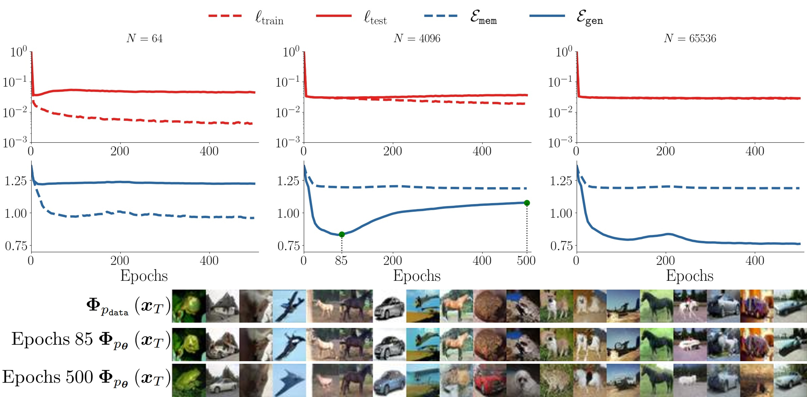
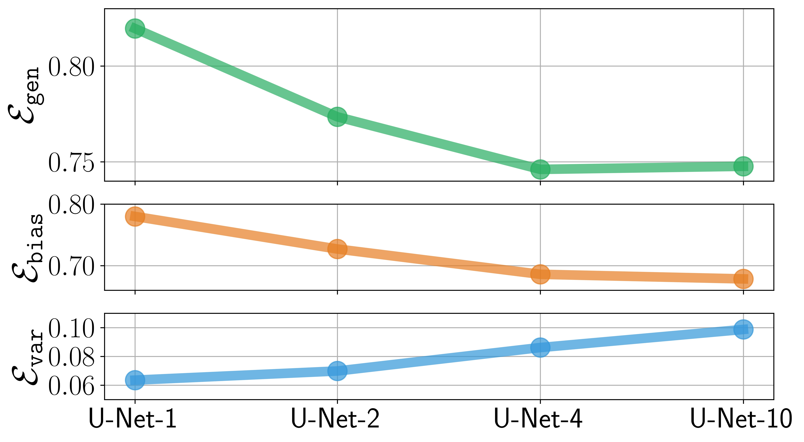
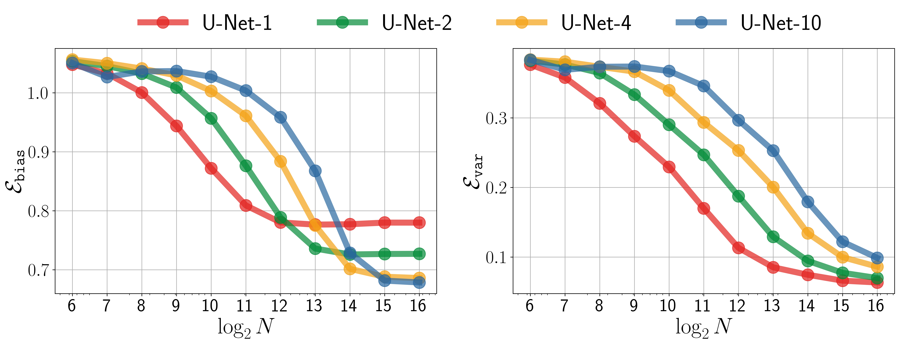

Measuring Key Generalization Behaviors in Diffusion Models
Based on the evaluation protocol, this section reveals several key generalization behaviors in diffusion models: (i) MtoG scaling behaviors with model capacity and training size, (ii) early learning and double descent in learning dynamics, and (iii) bias-variance trade-off of generalization error.
Scaling Behaviors of the MtoG Transition

Scaling behavior in the MtoG transition.
\(\mathcal{E}_{\mathtt{mem}}\) and \(\mathcal{E}_{\mathtt{gen}}\) plotted against \(\log_2(N)\) for a range of U-Net architectures (U-Net-1 to U-Net-10). Right: the same metrics plotted against \(\log_2\left(\frac{N}{\sqrt{|\boldsymbol \theta|}}\right)\), where \(|\boldsymbol \theta|\) is the number of model parameters.
Early Learning and Double Descent in Learning Dynamics

Training dynamics of diffusion models in different regimes.
The top figure plots \(\mathcal{E}_{\mathtt{mem}}\), \(\mathcal{E}_{\mathtt{gen}}\), \(\ell_{\texttt{train}}\), \(\ell_{\texttt{test}}\) over training epochs for different dataset sizes: \(N = 2^6\) (left), \(2^{12}\) (middle), \(2^{16}\) (right). The bottom figure visualizes the generation when \(N = 2^{12}\). The top row shows samples from the underlying distribution \(\boldsymbol \Phi_{p_{\texttt{data}}}(\boldsymbol{x}_T)\), while the middle and bottom rows display outputs from the trained diffusion model \(\boldsymbol \Phi_{p_{\boldsymbol \theta}}(\boldsymbol{x}_T)\) at epoch 85 and 500, respectively.
Bias-variance Trade-off of the Generalization


Bias-Variance Trade-off.
(a) plots the generalization error \(\mathcal{E}_{\mathtt{gen}}\), bias \(\mathcal{E}_{\mathtt{bias}}\), and variance \(\mathcal{E}_{\mathtt{var}}\) across different network architectures with a fixed training sample size of \(N = 2^{16}\). (b) shows \(\mathcal{E}_{\mathtt{bias}}\) and \(\mathcal{E}_{\mathtt{var}}\) as functions of the number of training samples \(N\) for various network architectures.